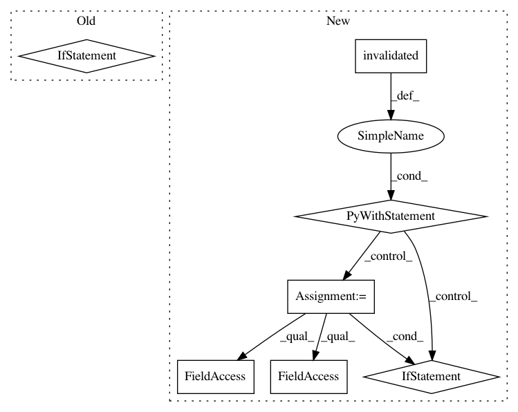

b2202480258b6f2f5f4e020e86cde975088c7792,src/python/pants/backend/jvm/tasks/jar_create.py,JarCreate,execute,#JarCreate#,70
Before Change
jar_path = os.path.join(self.workdir, jar_name)
with self.create_jar(target, jar_path) as jarfile:
with self.create_jar_builder(jarfile) as jar_builder:
if target in jar_builder.add_target(target):
self.context.products.get("jars").add(target, self.workdir).append(jar_name)
@contextmanager
def create_jar(self, target, path):
existing = self._jars.setdefault(path, target)
if target != existing:
After Change
return True
def execute(self):
with self.invalidated(self.context.targets(is_jvm_library)) as invalidation_check:
with self.context.new_workunit(name="jar-create", labels=[WorkUnit.MULTITOOL]):
jar_mapping = self.context.products.get("jars")
for vt in invalidation_check.all_vts:
jar_name = vt.target.name + ".jar"
jar_path = os.path.join(vt.results_dir, jar_name)
def add_jar_to_products():
jar_mapping.add(vt.target, vt.results_dir).append(jar_name)
if vt.valid:
if os.path.exists(jar_path):
add_jar_to_products()
else:
with self.create_jar(vt.target, jar_path) as jarfile:
with self.create_jar_builder(jarfile) as jar_builder:
if vt.target in jar_builder.add_target(vt.target):
add_jar_to_products()
@contextmanager
def create_jar(self, target, path):
existing = self._jars.setdefault(path, target)
if target != existing:
In pattern: SUPERPATTERN
Frequency: 3
Non-data size: 7
Instances
Project Name: pantsbuild/pants
Commit Name: b2202480258b6f2f5f4e020e86cde975088c7792
Time: 2015-07-11
Author: codyhgibb@gmail.com
File Name: src/python/pants/backend/jvm/tasks/jar_create.py
Class Name: JarCreate
Method Name: execute
Project Name: pantsbuild/pants
Commit Name: b6cf3e5ae60756141709e199dbd6265b6b2c3417
Time: 2017-07-31
Author: stuhood@twitter.com
File Name: src/python/pants/backend/jvm/tasks/scalafmt.py
Class Name: ScalaFmt
Method Name: execute
Project Name: pantsbuild/pants
Commit Name: 43df0378febb1fc8366243d321e01ef833c3265f
Time: 2015-08-18
Author: garrett.malmquist@gmail.com
File Name: src/python/pants/backend/jvm/tasks/jvm_platform_analysis.py
Class Name: JvmPlatformValidate
Method Name: validate_platform_dependencies